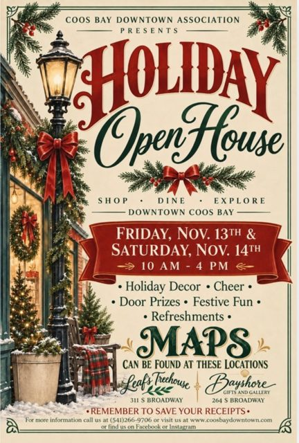

The big tree lights up in…
–days–hours–minutes–seconds
Counting down to the Annual Christmas Tree Lighting.
Annual Christmas Tree Lighting · Saturday, November 28 · about 5:45 PM · Coos Bay Visitor Center
November 2026
The holiday magic is in full swing in Downtown Coos Bay! On Saturday, November 28th, the Coos Bay Downtown Association invites the whole community to celebrate Shop Small Saturday and Santa Comes to Town. Bring the family downtown for a festive day of holiday shopping, warm cider, visits with Santa, a lighted walking parade, and the annual Christmas Tree Lighting.
The season kicked off with the Holiday Open House on November 13 and 14, when 23 participating downtown businesses opened their doors for early holiday shopping.
Shop Small Saturday is a wonderful opportunity to support the locally owned businesses that make Downtown Coos Bay special. From unique gifts and holiday decor to delicious food and one-of-a-kind treasures, downtown has something for everyone on your Christmas list. Every purchase helps support our local businesses and keeps our downtown community thriving.
The Downtown Cider Walk takes place from 11:00 AM to 3:00 PM. Stroll through participating downtown businesses, enjoy delicious cider, and soak up the holiday spirit. Cider Walk maps and commemorative steins will be available at Jennie’s Shoes on Central Avenue.
Shop at participating downtown businesses and restaurants between November 13th and November 28th, and save your receipts.
Add them up. Receipts totaling a combined $100 or more earn a commemorative stein.
Redeem your receipts at Jennie’s Shoes on November 28th, from 11:00 AM to 3:00 PM.
Santa Claus is coming to town — and he’s got a busy beach day planned. Here is how it runs:

Downtown Coos Bay kicked off the holiday season with the Holiday Open House on November 13 and 14, 2026. Twenty-three participating businesses took part, open 10 AM to 4 PM.